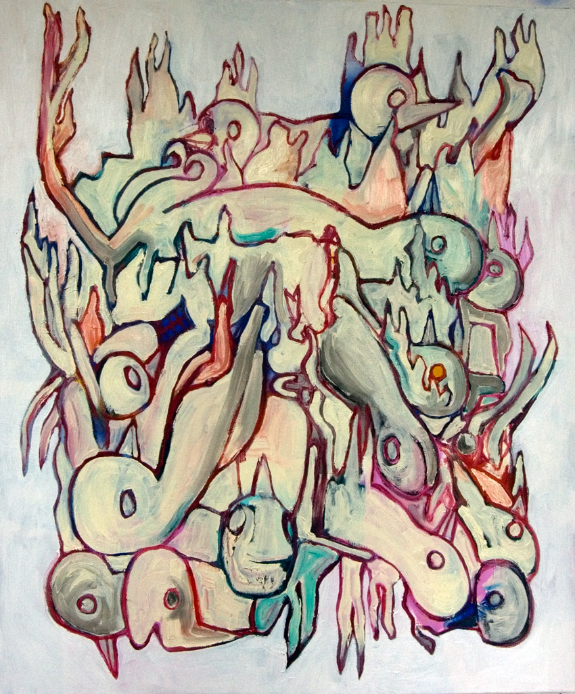

- My recent work is seeking meaning in a world confronted by extinction. Glysophate, climate change,
Brexit, rising xenophobia, etc .. we live in an increasingly destabilized world. What role does painting
play, if any? What is the artist’s role in a society on the verge of potential collapse? My artistic
practice is generally reactive in that I am responding to the world around me. In a world gone mad,
the tendency is to seek shelter. Becoming a hermit, meditating in a cave, is similar to the artist alone
in the studio seeking answers to unformed questions. The paintings are questions which imply their
own answers. We can make a telephone call to the stars, but no one is answering. As usual, man is left
alone with his mistakes and confusion, wondering how to make things which transcend the moment.
The artist’s way is perilous because it’s easy to choose the wrong path. Perhaps the questions I am
asking are the wrong ones. That’s the risk we all take in our lives. And sadly life is short.
Piles of dead birds. A grim symbol of a possible ecological collapse. And yet the birds are burning,
their lifeless eyes are beginning to glow. Like the phoenix, in a trial by fire, they will be reborn. What
is art and painting in the face of mass extinction? What is the human experience if all we have made
is leading us to die? The birds (in us) are waiting to be reborn and fly. There will be a reincarnation ..
this is the promise of Easter/Inanna in the Underworld. So my new work is springing from a spiritual
place, reflecting the desperation and hope engendered by the present.
For more information and my artist CV, have a look at my latest pdf.
Lawrence Wells (1965) studied painting at Indiana University, and received his MFA from the
University of Mississippi (1992). He has lived in Prague for more than 18 years and has exhibited at
a number of galleries, both in the Czech Republic and in the USA.
|
 |